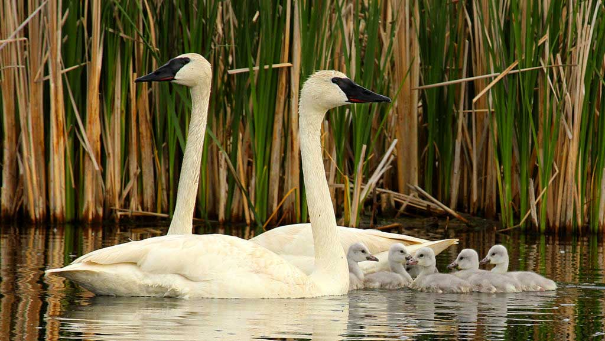
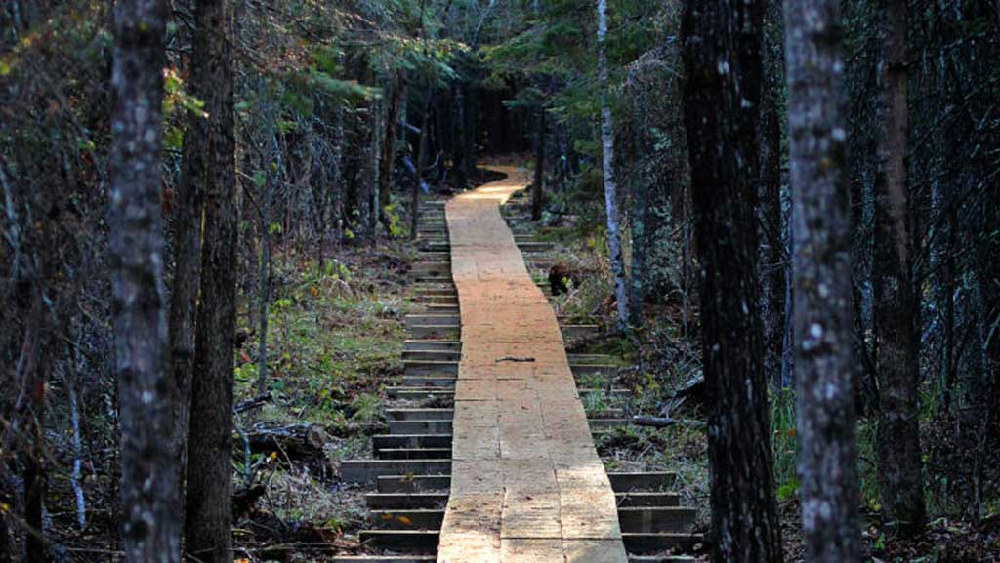
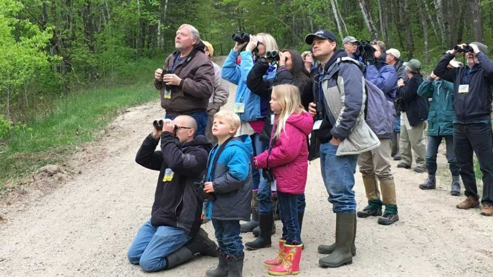
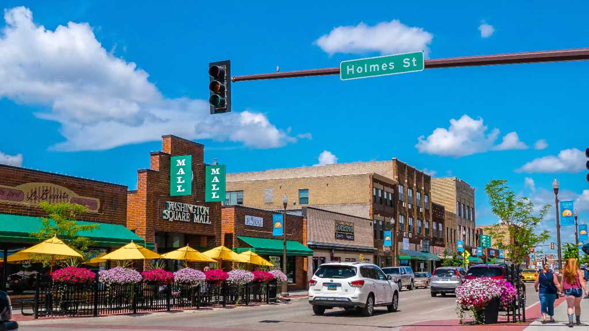

Detroit Lakes es un lugar con un sinfin de actividades y espacios recreativos que vale la pena vivir, estos son algunos:
Salga de la ciudad y reconéctese con su lado salvaje en Detroit Lakes. Tenemos tres bosques estatales, tres parques estatales, dos refugios nacionales de vida silvestre y más de 70,000 acres de áreas silvestres en nuestro patio trasero listas para explorar.
Manténgase dentro de los límites de la ciudad y pasee por los tres parques de la ciudad. Traiga a su perro a nuestro parque para perros de la ciudad. Explore 117 acres de pantanos, arroyos de truchas, senderos pantanosos, refugios, bosques y praderas en Sucker Creek Preserve. O aventúrese fuera de la ciudad a nuestro parque del condado y más allá.
Traiga sus binoculares para que pueda ver básicamente todas las aves en Minnesota. Detroit Lakes está ubicado en el corazón de una zona de transición entre la pradera de pastos altos, la madera dura del norte y los ecosistemas de bosques de coníferas. ¡Esta diversidad de hábitat alberga más de 275 especies de aves! La observación de aves a mediados de mayo es espectacular, así que planifique su viaje de observación de aves al Festival de las Aves anual.
Pasee por el centro histórico, con una taza de café en la mano, y deténgase para comprar en encantadoras tiendas y boutiques locales. Visite el Washington Square Mall para obtener aún más opciones y tal vez un poco de cuidado y esmalte de uñas. Agáchate por las calles laterales y encuentra tesoros que no podrás dejar pasar. No importa dónde visite, encontrará infinitas... oportunidades de compras... esperando en Detroit Lakes.
© Gabriela Avila 2022